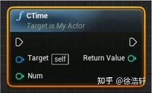
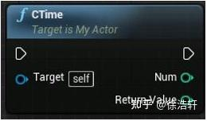

虚幻引擎开发相关语法
常用标记
BlueprintCallable
表明此函数可在蓝图中被调用(当类被蓝图继承后才有效果)。比如（Unreal\CarlaUE4\Plugins\Carla\Source\Carla\OpenDrive\OpenDrive.h）：
UFUNCTION(BlueprintCallable, Category="CARLA|OpenDrive")
static FString LoadXODRFullPath(const FString &FullPath);
注意：如果函数参数是引用类型，则在蓝图中调用被当做输出针脚，如果传入参数是const修饰的引用类型，则在蓝图中被当做输入针脚：
UFUNCTION(BlueprintCallable)
int32 CTime(const int32& num);

UFUNCTION(BlueprintCallable)
int32 CTime(int32& num)://被当做函数输出针脚使用

UPROPERTY 宏标记
用于将对象属性暴露到蓝图中操作，整型中只有int32能暴露到蓝图中。
EditAnywhere：表示此属性可以在编辑器窗口中进行编辑也可在场景细节面板中编辑
目录
内容浏览器中的内容包括（打开右下角视图选项中的显示插件内容）：
* 内容 （Unreal\CarlaUE4\Content）
* Carla 内容 （Unreal\CarlaUE4\Plugins\Carla\Content）
* Carla C++ 类 （Unreal\CarlaUE4\Plugins\Carla\Source）
* CarlaTools 内容 （Unreal\CarlaUE4\Plugins\CarlaTools\Content）
* CarlaTools C++类（Unreal\CarlaUE4\Plugins\CarlaTools\Source）
* StreetMap 内容 （Unreal\CarlaUE4\Plugins\StreetMap\Content）
* StreetMap C++ 类（Unreal\CarlaUE4\Plugins\StreetMap\Source）